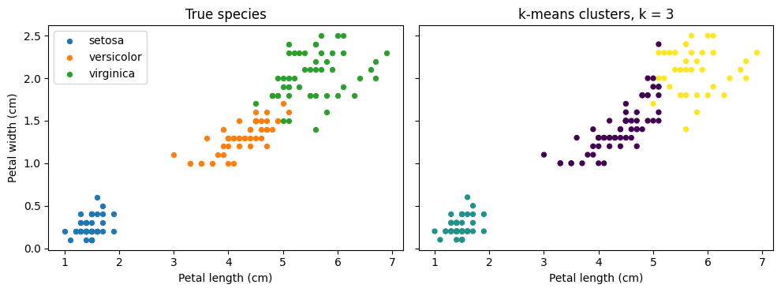

The Activity
Unit 6 · Run 31 October 2026 · Tutor: Dr Elizabeth Oladapo · Evidences learning outcomes 1 and 2
Activity guidance: run the supplied k-means demo, then cluster at least one of three datasets: iris and wine at k = 3, compared with their labels (Tasks A and B), and weatherAUS for k = 2 to 6, shown on two-dimensional scatter plots (Task C).
Findings
| Step (n) | What I did | Result |
|---|---|---|
| Demo (850 customers) | Made five corrections, then refitted k = 3 on the scaled data | The clusters now come from scaled data with a fixed seed; the 150 missing default values are counted rather than hidden. |
| Task A: iris (150 flowers) | Tried k = 2 to 8, then compared k = 3 with the species | 134 of 150 matched (89.3%), adjusted Rand index 0.730 (Hubert and Arabie, 1985, cited in Arabie and Hubert, 1992). Z-scores lowered this to 83.3% and range scaling to 88.7%; the silhouette score was highest at k = 2. |
| Task B: wine (178 wines) | Compared k = 3 with the three cultivars, on raw, z-scored and range-scaled measurements | Z-scores: 172 of 178 matched (96.6%), index 0.897. Range: 94.9%. Raw: 70.2%, index 0.371, although its silhouette score was higher. |
| Task C: weather (120,381 days) | Removed the rain columns and incomplete rows, standardised, then tried k = 2 to 6 | Silhouette scores of 0.16 to 0.24 at every k; k = 2 split warmer, less humid days from cooler, more humid ones. Filling gaps with medians instead gave almost the same k = 3 clusters (index 0.968). |

A tidy set of clusters is not proof that the groups exist. The silhouette score (Rousseeuw, 1987) disagreed with the labels twice: it preferred two iris groups although three species are present, and raw wine scored higher than z-scored wine while matching far worse. Scaling decided the wine result, yet z-scores, although Géron (2025) says scaling generally helps, lowered the iris match. Dividing by the range, which Milligan and Cooper (1988, cited in Arabie and Hubert, 1992) found better, came close to the best on both. Without location or date, the weather clusters cannot be interpreted by station or season. I would record scaling and missing-data choices for whoever acts on the clusters.
Evidence
I ran the notebook in Google Colab. Its first code cell records the run, and all 28 code cells completed without errors:
Run by Anne Dayer (student 39359) in Google Colab on 31 October 2026 at 15:11 UTCAI Acknowledgement
Codex was used to assist in identifying appropriate code solutions and to proofread and refine the code I produced. Claude and Grammarly supported proofreading, language refinement, and formatting of my written text. All final decisions, analyses, interpretations, conclusions, and recommendations are my own.
References
Arabie, P. and Hubert, L.J. (1992) ‘Combinatorial data analysis’, Annual Review of Psychology, 43, pp. 169–203. Available at: https://doi.org/10.1146/annurev.ps.43.020192.001125
Géron, A. (2025) Hands-On Machine Learning with Scikit-Learn and PyTorch. Santa Rosa: O’Reilly.
Rousseeuw, P.J. (1987) ‘Silhouettes: a graphical aid to the interpretation and validation of cluster analysis’, Journal of Computational and Applied Mathematics, 20, pp. 53–65. Available at: https://doi.org/10.1016/0377-0427(87)90125-7